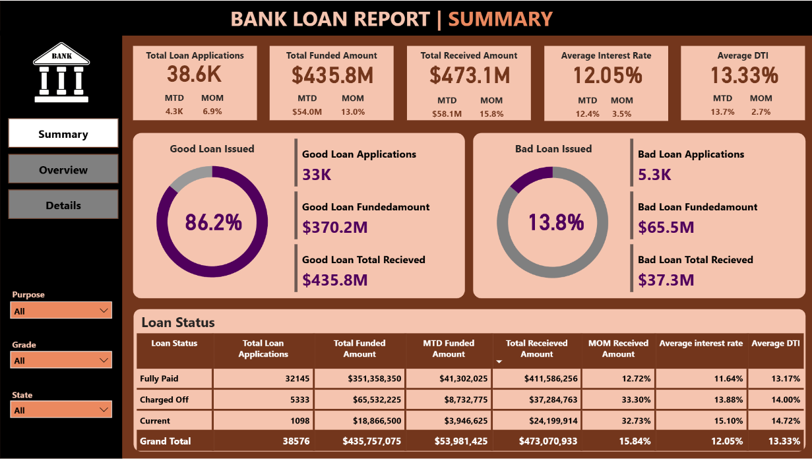
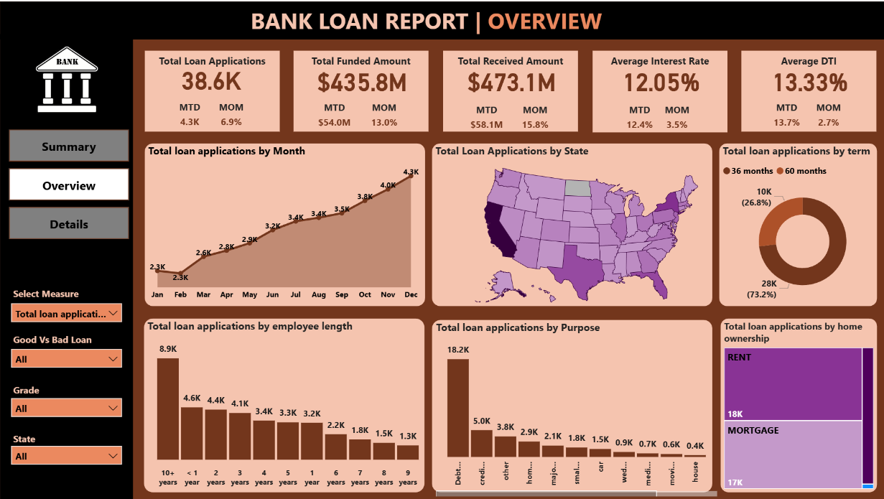
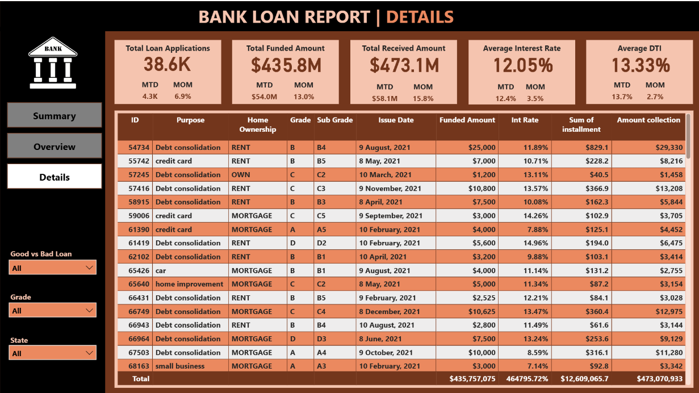

Bank Loan Analysis
Executive Summary
This project presents an interactive Bank Loan Analysis dashboard built using Power BI to evaluate loan applications, funded amounts,
repayment performance, and credit risk. The dashboard provides a consolidated view of good vs bad loans, borrower characteristics, loan purposes,
and repayment trends to support data-driven lending and risk management decisions.


Business Problem
- Banks and financial institutions need to continuously monitor their loan portfolio health to reduce defaults and improve profitability. Key challenges include:
- Identifying high-risk loans and borrowers
- Tracking good vs bad loan performance
- Monitoring funded vs received amounts
- Understanding how factors like loan purpose, term, grade, employment length, and geography impact repayment behavior
Without a centralized analytical view, decision-makers lack visibility into credit risk exposure and portfolio performance.
Methodology
- Cleaned and prepared historical loan data including loan amount, interest rate, DTI, loan status, borrower profile, and repayment details.
- Created DAX measures to calculate:
- Total Loan Applications
- Total Funded Amount
- Total Received Amount
- Average Interest Rate
- Average Debt-to-Income (DTI)
- Month-over-Month (MoM) and Month-to-Date (MTD) metrics
- Classified loans into Good Loans (Fully Paid, Current) and Bad Loans (Charged Off).
- Designed a multi-page Power BI dashboard (Summary, Overview, Details) for different analytical needs.
Dashboard Features
- Summary Page
-
- High-level KPIs: Total Applications, Funded Amount, Received Amount, Avg Interest Rate, Avg DTI
- Good vs Bad Loan comparison
- Overview Page
-
- Loan trends by month
- Loan distribution by state, purpose, term, employment length, and home ownership
- Interactive slicers for state, grade, and purpose
- Details Page
-

- Transaction-level loan details
- Drill-down capability for individual loan analysis
Results
- Identified that good loans account for the majority of funded and received amounts, indicating overall portfolio stability.
- Revealed loan purposes and borrower segments associated with higher default rates.
- Highlighted the relationship between interest rates, DTI, and loan performance.
- Enabled quick identification of risk-heavy loan categories and regions.
Business Recommendations
- Strengthen credit evaluation for borrower segments with high DTI and higher interest rates.
- Monitor charged-off loans closely to reduce future NPAs.
- Adjust lending strategies based on loan purpose and employment length risk patterns.
- Use dashboard insights for early risk detection and portfolio optimization.
- Regularly track MoM and MTD metrics to respond quickly to performance changes.
Skills & Tools Used
- Power BI
- DAX (Measures & Calculated Columns)
- Data Modeling
- Data Cleaning & Transformation
- Financial & Credit Risk Analysis
- KPI Development
- Dashboard Design & Business Storytelling
Conclusion
This Bank Loan Analysis dashboard transforms complex loan data into clear, actionable insights. By combining portfolio performance metrics with borrower and loan-level analysis, the solution supports better lending decisions, improved risk management, and enhanced operational transparency for financial institutions.
Project Links
View GitHub Repository
← Back to Portfolio